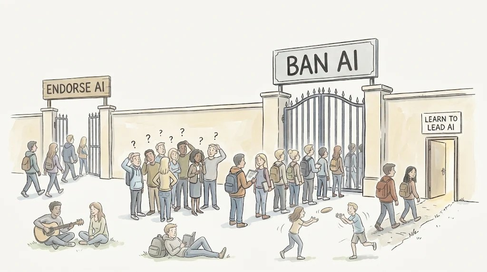

Disclosure: through Bursera Consulting I teach people how to lead AI tools, which is part of what this essay argues for. A note at the end explains how it was written. Numbered notes at the end give the details and sources.
AI unsettles what we thought made us most valuable, and that can remind us what actually does: being present, and being with each other.
Ban it or endorse it?
A friend in higher education sent me a Chronicle of Higher Education interview last week, titled “Everybody Is Going to Be Made Obsolete,” and asked the question many university leaders are asking now: should we ban AI or endorse it?
The interview gives an answer that is too simple. The Princeton political theorist Gregory Conti argues that AI is bringing the long human project of intellectual achievement to an end, and that universities should purge it from their operations, with a possible exception for medical research. The piece opens with the Cornell mathematician Steven Strogatz. At a department meeting, a student asked what the point was if AI can do math better than any person. Telling that story later on a podcast, Strogatz became emotional and called himself a wreck. [1]
I take that grief seriously, and Conti makes points that are hard to dismiss. AI breaks the link between good work and the skill of the person who made it, and universities award jobs and honors on that link. In his view, asking a person is now never the most efficient option, so the expert who once felt needed no longer is. He grants that earlier waves of technology brought real losses along with real gains, and argues this one is different in kind, because it leaves nothing to move to. [1]
Universities are reacting to real problems. In a 2026 Harvard Crimson survey, 64 percent of the faculty who responded said AI had hurt their courses. [2] In a national Gallup survey, 42 percent of college students said their school discourages AI use, and 52 percent said at least some of their classes lack clear guidance on how it may be used. [3] At Harvard, the college’s dean has gone the other way, suggesting accepting, even encouraging, AI in writing courses. [2] I understand why faculty are pulling back, and some work should be done without AI. A blanket ban is different. It steers students away from the experience they will need most.
We are more than our intelligence
Conti grieves the loss of human striving, of intellectual greatness we can admire in each other, of heroes like Einstein, and of understanding itself. Those losses are worth taking seriously. But our intelligence is only one part of what makes us valuable.
By what is valuable, I mean what people keep returning to when they reflect on what makes a life good. I believe two things sit at the center of that: being fully present in experience, and the quality of our relationships with other people. Tools have changed how we practice both. I don’t believe a tool can change that center. It could even help us see it more clearly.
We are a long way from obsolete. The challenges to how and what we learn, to the role of universities and to our place at work are real, and none has a simple answer.
Two things to learn
I am not an academic. I am a practitioner and a generalist who has spent a career leading teams, and for most of it I was also the lead analyst who loved working out every detail myself. From that work I see two things people now have to learn, and both take practice.
The first is the work itself: the knowledge and skills of a subject or a profession. Judgment from consequences, the sense of when to push back because you have been wrong before, comes from practice alongside people who have done it longer. This is the loss Conti is right to fear. Ethan Mollick at Wharton points out that learning takes effort a student cannot hand to a tool, and argues for being intentional about when to use AI. [4] A high school experiment in Turkey shows the cost of skipping that effort. Students who practiced math with plain ChatGPT did better during practice, then did worse than students who never had it once the tool was taken away. Students using a version built to give hints instead of answers largely avoided that drop. [5]
The jobs where people used to learn the work are shrinking too. Early Stanford data show fewer jobs for workers aged 22 to 25 where AI replaces tasks, but not where it helps people do them. The authors call this an early warning, not proof that AI caused the decline. [6] As Erik Brynjolfsson, who leads that research, asks: if companies stop hiring junior workers, where will their senior workers come from? [7]
The second is leading the tools: a new kind of work with skills of its own. Conti anticipates the usual answer, that people can still check the machine’s work, and says checking is not enough to sustain a culture. [1] He is right about that. But leading AI is different from checking it. It is closer to leading a team of people. You learn what the team is good at, where it is weak, what boundaries to give it, and when to challenge it because something is wrong. Blanket bans keep students from practicing this.
With writing, using the tools and learning to see what is weak in a draft teaches what to look for and what good writing looks like. That is how this essay was written.
Knowing the work and leading the tools depend on each other. In a large study of management consultants, those using AI did better work and finished faster on tasks the AI handled well. On a task it handled badly, they did worse than colleagues working without it. [8] Telling those two kinds of tasks apart takes knowledge of the work.
The new generation’s advantage
Young people have an opening here, if they can get in the door. People starting their careers can learn from the beginning how “AI teams” behave, where they are strong and where they fail. And much of the industry knowledge that once took years of experience to gather can now be learned faster by someone who knows these tools.
The research points the same way. Studies of customer support agents and management consultants found that AI helped newer and weaker performers the most. [9] [8] Those studies measured performance with the tool. Whether it turns into learning depends on how the help is designed, as the Turkey study shows.
What compresses fastest is knowledge that is written down. Judgment still takes years of doing the work. The young bring fluency in leading these tools. Experienced people bring judgment. Each needs the other, and that could put the generations back in the same room.
What universities can do
The disciplines universities have always taught are still needed. The classic liberal arts skills of critical thinking, analysis, communication and others are needed now more than ever. Judging what a machine produces takes exactly the judgment, interpretation and sense of right and wrong they teach.
Used well, the tools can help teach the classic skills. One of Conti’s points is that no one can tell who did the work. Asking students to show the process and explain what they learned gives instructors better evidence. The tools themselves can track the sources, the human steps and choices to show how the work was done, and a student explaining it in person shows what they know. Neither fully solves cheating, and an oral explanation for every assignment does not scale.
More significantly, we must teach students the strengths and weaknesses of the new tools and how they can get the most from them in their work. The tools present themselves as something very simple, but using them well is not simple at all. David Autor at MIT argues that AI used well could help more workers do expert work, and he calls that a possibility, not a forecast. [10] None of this works unless employers keep hiring people at the start of their careers.
Teaching it starts with faculty learning these tools deeply themselves. If faculty are anything like other professionals, I would say that most haven’t yet, and what “deeply” means is hard to explain until you’ve done it.
The hard part is deciding when students should work without AI and when they should learn to lead it. That changes by subject and by assignment, and it takes faculty time and training that someone has to pay for. Students who can afford the best tools will have an advantage too. I don’t have answers to those, and they are the real questions, more than ban or endorse.
Andrew Maynard at Arizona State has asked whether universities are putting undergraduates in playpens when they need playgrounds. [11] I’d go further and say they need training grounds, like a gymnasium or bootcamp, where they are coached and given exercises that help them explore and make mistakes and in the end allow the teachers to see whether they really know how to use the tools well.
What is old is new
I entered high school in 1979, at a math, science and computer magnet school. Mainframes were out, PCs were arriving, and BASIC, Pascal, COBOL and FORTRAN were hot. Everyone had to learn programming because every job would need it. Keyboarding was a required skill. Calculators were banned in class as a threat to math. In 1983 a federal commission called for every high school graduate to take half a year of computer science. [12] Within a few years critics were pointing out that most computer users would never write a program. [13] Many math teachers still kept calculators out of class. [14]
My only takeaway was that I didn’t want to become a programmer. I trained to be an architect instead, where I could draw and solve engineering problems. But computing was here to stay, and computers automated hand drawing out of architecture. They didn’t change the need to think spatially or to understand what clients need. The newest tools go much further than drafting ever did. They can reconcile huge sets of requirements, find the problems and solve them in ways that were never possible before. With luck, that lets us see that many of those problems are human ones, and gives us the chance to work with other people to agree on them and resolve them.
The same is true in my work now. People who lead development teams can help business leaders understand the decisions only they can make, so the teams doing the work can build something truly useful. Conti would say this time is different in kind, because there is nothing left to move to. I think there is, and it is where this essay started.

Be human
AI is here to stay. The change is disruptive, and it is hard. Using it well takes real skills, and universities should be teaching them.
My own hope is that as AI takes over more of the everyday work of writing and recording, we come to appreciate being present, and being with each other, more deeply than we ever have before. I imagine a world where live music is more common, and where storytelling and live theater are valued over the recordings we have come to rely on more and more over the last century.
How this was made
The thinking and judgment here are mine, built over earlier pieces on AI, writing and history. I wrote it with Claude, an AI model made by Anthropic, over more than a dozen drafts. The research was mostly about understanding where people in academia stand, and who is working to figure this out rather than ban it. Where the material was research I wasn’t arguing, I let Claude draft and coached it toward clarity and consistency. My experience and my view only I could write, and Claude helped me say them better as we went back and forth. Arguments and citations that weren’t helping the ideas came out, good ones included. The more I cared about the quality of the argument, the more I edited and refined it myself, and seeing Claude’s writing helped me clarify my own thinking. Claude review passes tested the argument, including two by fresh readers who had not seen the drafting. Sol, a different model on Perplexity, checked the citations on an earlier draft and reviewed a later one, and GLM reviewed it as well. I checked the Chronicle quotes against my saved copy of the interview and supplied the full text of the Harvard Crimson article. Claude checked the other sources against their published versions or summaries. I have led AI tools through work like this hundreds of times, and I know where to trust their output, where to check it and which tools suit which jobs. The illustrations were made with Google Gemini.
Notes and sources
- The Conti interview. Evan Goldstein and Len Gutkin, “‘Everybody Is Going to Be Made Obsolete’” (interview with Gregory Conti), The Chronicle of Higher Education, 9 November 2026. — chronicle.com
- Harvard faculty survey. Hugo C. Chiasson, Abigail S. Gerstein and Amann S. Mahajan, “More than 60 Percent of Harvard Faculty Say AI Harms Their Courses,” The Harvard Crimson, 13 September 2026. The Crimson surveyed more than 1,400 Faculty of Arts and Sciences members and received 463 responses. 64 percent of faculty respondents said AI had a negative effect on their courses, up from 42 percent a year earlier. Faculty who prohibit AI entirely rose from 20 to 24 percent. In a sample of fall 2026 classes, more than half of science and engineering classes allowed AI use, compared with 35 percent in the social sciences and 27 percent in the arts and humanities. College Dean David Deming has floated “AI acceptance, or even encouragement” in writing courses. — thecrimson.com
- Lumina Foundation–Gallup student survey, 2026. 42 percent of students said their school discourages AI use, 11 percent said it bans it, and 7 percent said it encourages it as much as possible. 52 percent said at least some of their classes lack clear guidance on specific use policies. Reported by Route Fifty, April 2026. — route-fifty.com
- Mollick on learning. Ethan Mollick, “Choosing to Stay Human,” One Useful Thing, 26 May 2026. He argues for being intentional about AI rather than relying on it or avoiding it by reflex, and says that to learn with AI students need to move from having it solve problems to having it push them to solve problems themselves. — oneusefulthing.org
- The high school math experiment. Hamsa Bastani, Osbert Bastani, Alp Sungu, Haosen Ge, Özge Kabakcı and Rei Mariman, “Generative AI without guardrails can harm learning: Evidence from high school mathematics,” Proceedings of the National Academy of Sciences 122(26), 2025. Nearly 1,000 students at a high school in Turkey. During practice, access to GPT-4 raised grades 48 percent with a standard ChatGPT-style interface and 127 percent with a tutor designed to give hints. When access was removed, students who had used the standard interface scored 17 percent lower than students who never had access; the tutor’s safeguards largely prevented that drop. — SSRN 4895486
- Stanford “Canaries” study. Erik Brynjolfsson, Bharat Chandar and Ruyu Chen, Stanford Digital Economy Lab, revised August 2026. No evidence of widespread, economy-wide job displacement. Employment of workers aged 22 to 25 in AI-exposed jobs stands 19 percent below where it would be had it kept pace with less-exposed peers. Declines are concentrated where AI primarily substitutes for tasks; where it primarily complements workers, employment is flat or rising. The authors call these early, descriptive indicators, not causal estimates. — digitaleconomy.stanford.edu
- Brynjolfsson interview. “Are young workers canaries in the AI coal mine?,” Big Think, October 2025: “But where do they come from? They come from junior workers.” — bigthink.com
- The “jagged frontier” study. Fabrizio Dell’Acqua et al., Harvard Business School Working Paper 24-013, September 2023. 758 Boston Consulting Group consultants. On tasks inside the AI’s capabilities, consultants using AI completed 12.2 percent more tasks and finished 25.1 percent faster. On a task outside them, they were 19 percentage points less likely to reach the correct answer. Consultants below the median gained 43 percent from AI; those above gained 17 percent. — SSRN 4573321; HBS Working Knowledge summary
- Customer support study. Erik Brynjolfsson, Danielle Li and Lindsey Raymond, “Generative AI at Work,” Quarterly Journal of Economics 140(2), 2025. Among 5,179 customer support agents, an AI assistant raised productivity 14 percent on average and 34 percent for novice and low-skilled workers, with little effect on the most experienced. — nber.org
- Autor. David Autor, “AI Could Actually Help Rebuild The Middle Class,” Noema, 12 February 2024. He argues AI can help workers with foundational training and experience do higher-value work, and calls his thesis “not a forecast but a claim about what is attainable.” — noemamag.com
- Maynard. Andrew Maynard, “Are we putting our undergrads in playpens when they need playgrounds?,” The Future of Being Human, 17 March 2024. — futureofbeinghuman.com
- Computer science for every graduate. National Commission on Excellence in Education, A Nation at Risk, April 1983. It recommended that every student seeking a diploma take four years of English, three years each of mathematics, science and social studies, and a half-year of computer science. Reported in “Few Seniors Met Standards Set by Excellence Panel,” Education Week, September 1983. — edweek.org
- Programming as computer literacy. William Snider, “Computers: A Change of Course?,” Education Week, 22 January 1986. Programming was a principal element in most state definitions of computer literacy, and some states required courses in languages such as BASIC, LOGO and Pascal; critics argued that most computer users are not programmers. — edweek.org
- The calculator debate. “The great calculator debate. Educators disagree over their place in the classroom,” The Christian Science Monitor, 9 May 1986. Fewer than half of math teachers used calculators in teaching, often only to check answers, although the National Council of Teachers of Mathematics had advocated them since at least 1980. — csmonitor.com